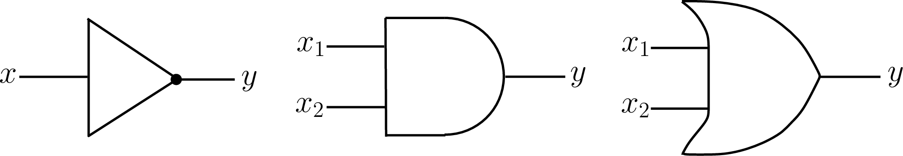
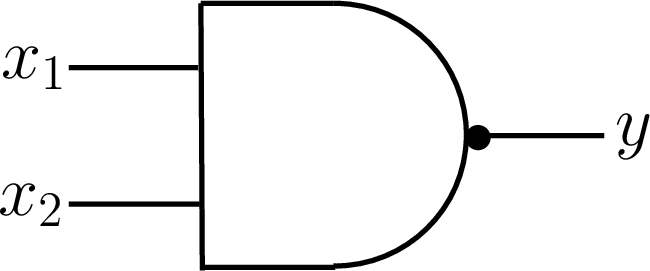
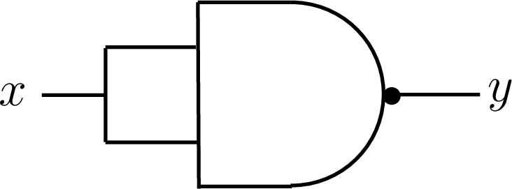

Propositional Logic
A Brief Introduction
Welcome to Discrete Math and Probability Theory! You might be wondering what you’ve gotten yourself into — we’re delighted to tell you that the answer is something quite remarkable. For as you will find in this course, computer science is a unique field which straddles the fine line between a wealth of research areas: Natural sciences such as physics and chemistry, applied fields such as engineering, and abstract areas such as mathematics. It is precisely this pervasive diversity that not only allows computer science to have something to offer for everyone, but also makes it a driving force of life as we know it today.
So let us begin by dispelling a common myth: What exactly is computer science? Is it programming in Java or C++? Networking via the Internet? Or perhaps videogames and troubleshooting personal computers? The answer is that all of these are indeed aspects of computer science; they form part of the “engineering” or applied sides of the field, which works to create useful, reliable, working systems. Yet, this is just part of the answer. For at the heart of computer science lies a fundamental core of highly theoretical areas such as artificial intelligence, algorithms, cryptography, and even quantum computing. These areas investigate questions such as: How can we make a robot smart? Find the shortest path between cities on the map? Or send secretly coded messages to one another? It is this theoretical foundation which makes computer science fundamentally possible.
Sound interesting so far? Good. In this course, our goal is to equip you with the basic tools and language you need to move forward in your study of computer science. Which language are we talking about? Why, mathematics, of course! It turns out that the underlying principles of computer science can be described very elegantly using mathematics, particularly in theoretical branches.
With that said, it is quite understandable if aspects of this material seem at first abstract and difficult to master. Yet, do not be discouraged. Any beginning guitarist, for example, dreams of shredding on stage like, say, Jimi Hendrix (or whoever their favorite musician happens to be). To attain this level of mastery, however, first requires the development of basic terminology and skills, such as the ability to read music and to play scales. In this sense, computer science is no different; there are basic mathematical tools which first need to be internalized. Thus, if at any time it should strike you as difficult to appreciate the material in these notes, fret not, and remind yourself that exciting ideas in computer science lie just ahead!
High-Level Overview of the Course
This course can be thought of as consisting of two halves. The first begins with the basic language of mathematics: logic and proofs. At first, these two topics may seem completely disconnected from anything related to computers; however, it is precisely their study which led to the invention of computers to begin with! Moreover, logic is directly related to digital circuit design, and proofs by induction play a central role in analyzing programs. Indeed, induction is deeply connected to recursion. In this section, developing your ability to write coherent, rigorous proofs will be an important focus. Next, we move on to the study of a special type of arithmetic known as modular arithmetic. The beautiful properties of such numbers leads directly to schemes for computer security, and for storing and transmitting data so that it is immune to noise.
The second half of the course will introduce you to the basic principles of probability theory. This subject plays a crucial role in every aspect of computer science today, from machine learning and artificial intelligence, to dealing with massive data sets, to computer security.
Finally, let us close this introduction by highlighting one of the primary skills this course will allow you to develop: problem-solving. Indeed, one of the hallmarks of discrete mathematics is its wealth of interesting and mind-stretching puzzles and problems. As you work through the homework questions, you will learn how to attack questions, even when at first you may have no idea what the answer might look like. This kind of problem solving ability will greatly help you in the rest of your computer science career, in addition to being a critical skill for many job interviews and an invaluable asset throughout life.
Propositional Logic
To begin, we introduce the language of propositional logic. What use is this language? It gives us a clean formalism in which to write and prove mathematical statements. In particular, it treats statements in a black or white fashion — either a statement is true, or it is false; there are no “shades of gray” in between. The formal name for this “black or white” behavior is the law of the excluded middle, which states that either a statement or its negation must be true.
The basic construct we begin with is the proposition. A proposition is simply a statement which is either true or false, such as:
- \(\sqrt{3}\) is irrational.
- \(1+1=5\).
- Julius Caesar had 2 eggs for breakfast on his \(10^{\text{th}}\) birthday.
Given two propositions \(P\) (for example, \(P\) could stand for “3 is odd”) and \(Q\), we can next combine them in a number ways to obtain more interesting propositions. Specifically, we introduce the connectives AND, OR, and NOT for accomplishing this below:
Conjunction (AND): \(P \wedge Q\) (i.e. “\(P\) and \(Q\)"). True only when both \(P\) and \(Q\) are true.
Disjunction (OR): \(P \vee Q\) (i.e. “\(P\) or \(Q\)"). True when at least one of \(P\) and \(Q\) is true.
Negation (NOT): \(\lnot P\) (i.e. “not \(P\)"). True when \(P\) is false.
We call a statement which is always true, regardless of the truth values of its variables, a tautology. For example, consider \(P\vee \neg P\). In contrast, a statement which is always false is a contradiction; an example is the statement \(P \wedge \neg P\).
Sanity check! Let \(P\) denote the proposition “\(10^2 = 100\)” and \(Q\) denote “\(4+5 = 49\)”. What are the values of \(P \land Q\), \(P \lor Q\), and \(\neg Q\)? (Answer: False, True, True).
By using connectives to combine propositions, we can obtain complicated statements such as \[\neg((P_1 \vee P_2) \wedge \neg (P_1\vee P_3)) \vee ((P_2 \vee P_3) \wedge \neg (P_4\vee P_5)).\] However, such statements quickly become difficult to digest. Thankfully, there is a simple equivalent representation of propositions called a truth table. A truth table is exactly what you might expect: For a given proposition, we simply list all possible input values for its variables, along with the outputs given those inputs. (The order does not matter.) To illustrate, here are the truth tables for conjunction (AND) and negation (\(\neg\)), where \(T\) and \(F\) stand for true and false, respectively:
\[ \begin{array}{|c|c||c|} \hline P & Q & P \land Q \\ \hline T & T & T \\ T & F & F \\ F & T & F \\ F & F & F \\ \hline \end{array} \qquad \begin{array}{|c||c|} \hline P & \neg P \\ \hline T & F \\ F & T \\ \hline \end{array} \]
Sanity check! What is the truth table for disjunction (OR)?
So far, we introduced the connectives AND, OR, and NOT. Now that we’re warmed up, let us introduce a fourth connective, which is a bit trickier but possibly the most important:
- Implication (IMPLIES, \(\implies\)): \(P \implies Q\) (i.e. “\(P\) implies \(Q\)"). This is the same as “if \(P\), then \(Q\)".
Intuitively, the way you should think about implication is that it is only false when \(P\) is true and \(Q\) is false. Formally, here is the truth table:
\[ \begin{array}{|c|c||c|} \hline P & Q & P \implies Q \\ \hline T & T & T \\ T & F & F \\ F & T & T \\ F & F & T \\ \hline \end{array} \]
A useful fact to keep in mind is that \(P\implies Q\) is equivalent to the statement \(\neg P\vee Q\).
Sanity check! Write down the truth table for \(\neg P \lor Q\). Does it match that for \(P \implies Q\), as claimed?
The Contrapositive and Converse
Thus far, we have introduced the concept of a proposition, along with connectives AND, OR, NOT, and IMPLIES. We now explore two fundamental statements which are closely related to \(P\implies Q\). They are the contrapositive and the converse:
Contrapositive: \(\neg Q \implies \neg P\).
Converse: \(Q \implies P\).
One of these is logically equivalent to \(P\implies Q\), and the other is not. Can you tell which is which? How would you formally check your guess? One way is to write down the truth tables and compare them:
\[ \begin{array}{|c|c|c|c||c|c|c|c|} \hline P & Q & \neg P & \neg Q & P \Longrightarrow Q & Q \Longrightarrow P & \neg Q \Longrightarrow \neg P \\ \hline T & T & F & F & T & T & T \\ T & F & F & T & F & T & F \\ F & T & T & F & T & F & T \\ F & F & T & T & T & T & T \\ \hline \end{array} \]
Note that the columns for \(P\implies Q\) and \(\neg Q\implies \neg P\) match, whereas \(Q\implies P\) differs; thus, we say \(P\implies Q\) is logically equivalent to \(\neg Q\implies \neg P\) (its contrapositive). In general, to denote that statements \(R\) and \(S\) are equivalent, we use notation \(R\iff S\), or in English, “\(R\) if and only if \(S\)” (informally abbreviated as \(R\) iff \(S\)). (Alternatively, one can use the notation \(R\equiv S\).)
Having shown that \(P\implies Q\) is equivalent to its contrapositive, you might ask: Why are we discussing the contrapositive at all? Well, sometimes the contrapositive is easier to prove than the implication itself.
Finally, where does the converse \(Q\implies P\) fit into all this? Although it looks superficially similar to the contrapositive, the converse is not in general equivalent to \(P\implies Q\). Rather, the converse plays a very important role in proving the equivalence of two statements via the following identity:
Sanity check! Show that \(P \iff Q\) is logically equivalent to \((P \implies Q) \land (Q \implies P)\). [Hint: Write down the truth tables for \(P \iff Q\) and \((P \implies Q) \land (Q \implies P)\), check that they match.]
In particular, this identity says that if you wish to prove equivalence of two statements, proceed by showing the implication in each direction. It will prove repeatedly useful in this course, so keep it in mind!
Quantifiers
Part of the magic of the formal proof systems we’ll discuss in this course is the fact that one can prove statements about infinite sets of objects with just a finite size proof. But wait a second, have we even learned how to formally write down a statement about infinitely many objects yet? Let’s see: How would you use propositions to express the statement “for all integers \(x\), \(x\) is either even or odd”?
Here’s one approach: Let \(P(x)\) denote ”\(x\) is even” and \(Q(x)\) denote ”\(x\) is odd”, and consider the propositional form \(P(x)\vee Q(x)\). Does this capture the statement we wished to make? No. In particular, we’ve lost something in the translation — the phrase “for all \(x\)”. Thus, what we need next is language for dealing with such phrases; such tools are called quantifiers.
Here are our two quantifiers of interest:
Universal quantifier: Denoted \(\forall\), read “for all”.
Existential quantifier: Denoted \(\exists\), read “there exists”.
Note that the universal quantifier \(\forall\) is precisely what we needed above — in particular, we can now formally write “for all integers \(x\), \(x\) is either even or odd” as \((\forall x\in \mathbb{Z})\; (P(x)\vee Q(x))\). The existential quantifier works similarly. For example, suppose we wish to say “there is a prime integer”. Then, we could write \((\exists x\in \mathbb{Z})\;(x\text{ is prime})\). Note that both quantifiers implicitly create a notion of a “universe” \(U\) over which the statement is made. In both of the examples above, this universe \(U\) is just the set of integers, \(\mathbb{Z}\).
Sanity check! Use quantifiers to express the following two statements: “for all integers \(x\), \(2x + 1\) is odd”, and “there exists an integer between \(2\) and \(4\)”.
Note now that there is no reason to limit ourselves to just one quantifier per statement. To demonstrate, let’s try something a bit more advanced:
- \((\forall x \in \mathbb{Z})\;(\exists y \in \mathbb{Z})\;( x < y)\)
- \((\exists y \in \mathbb{Z})\;( \forall x \in \mathbb{Z})\;(x < y)\)
Can you explain in English what the two statements are saying? The first says that, given an integer, you can always find a larger integer. The second says something very different: That there is a largest integer! (The first statement is true, the second is not.) Note that this example highlights a key point: In general, the order quantifiers are listed in does matter!
Much Ado about Negation
Let us close this note with a few useful identities involving negations: Just like tricks in, say, basketball such as dribbling between your legs or behind your back, these mathematical tricks will help you put propositional puzzles involving negations to shame.
The four tricks we present are the following identities involving propositions, the first two of which are known as De Morgan’s Laws. Let \(P(x)\) denote a propositional formula with variable \(x\). Then:
\(\neg(P\vee Q) \iff (\neg P)\wedge (\neg Q)\).
\(\neg(P\wedge Q) \iff (\neg P)\vee (\neg Q)\).
\(\neg (\forall x\; P(x)) \iff \exists x \;\lnot P(x)\).
\(\neg (\exists x\; P(x)) \iff \forall x \;\neg P(x)\).
To help develop intuition for these rules, let’s illustrate the third rule with an example. Let \(P(x)\) denote the statement “\(x\) is odd”, where we assume \(x\) takes values from the universe \(U=\mathbb{Z}\). Then, since it is not true that all integers are odd, we have that \(\lnot (\forall x\; P(x))\) is true. But if all integers are not odd, then there must exist an integer \(x\) which is not odd — this is precisely the statement \(\exists x \;\lnot P(x)\), as desired!
Sanity check! Let \(P(x, y)\) be some propositional formula over some universe. Using the rules above, show that \(\neg(\forall x \; \exists y \; P(x, y))\) is equivalent to \(\exists x \; \forall y \; \neg P(x, y)\). In particular, there is a simple rule this exercise should teach you — each time the negation moves past a quantifier, we “flip” that quantifier (i.e. \(\forall\) is flipped to \(\exists\) and vice versa).
Exercises
Although primitive at first glance, logic is key to fundamental areas of computer science such as digital circuit design. For example, below we depict logic gates used in circuits corresponding respectively to NOT, AND, and OR:
Here, the wires coming in from the left are the input wires, and the wires exiting from the right are the output wires. For example, the AND gate takes in input bits \(x_1\) and \(x_2\), and outputs \(y=x_1\wedge x_2\). A remarkable fact regarding circuits is that the NAND gate,
which computes \(y=\neg(x_1\wedge x_2)\) (note the black dot on the output wire, which indicates negation), is universal. In other words, each of the other three gates NOT, AND, and OR, can be simulated using just the NAND gate! How could this be? Let’s work it out for ourselves to find out!
Convince yourself (for example, via truth table), that the following circuit simulates the NOT gate, i.e. that \(y=\neg x\):
How would you simulate the AND gate? [Hint: Note that NAND is just AND composed with NOT, and the exercise above just demonstrated how to simulate NOT.]
How would you simulate the OR gate?
The rules of logic can also help us reason about games. For example, consider a two-player game with the following properties: There are two players, Toby and Fritz, and the game consists of two turns. First, Toby takes a turn, and then Fritz, and then one of them is declared the winner (i.e. there are no ties).
Show that either Toby or Fritz must have a winning strategy in the following sense: The person with the winning strategy always wins the game. [Hint: Consider the case where Toby has a winning strategy. Then, we can model this via the proposition “there exists a move by Toby such that for all moves by Fritz, Toby wins.” Use the law of the excluded middle to argue that if this statement is false, then its negation must be true — what is the negation of this statement?]
Which property of the game allowed us to apply the law of the excluded middle in part (a) above?